File: 000030.gt.txt (if the image is defective, simply delete all Arabic text and the line will be excluded)
بأشبيلية، واشتغل بها. وكان حافظا لأشعار العرب وأخبارها، اتصل
File: 000031.gt.txt (if the image is defective, simply delete all Arabic text and the line will be excluded)
بصاحب إشبيلية وحظي عنده، فمن شعره :
File: 000032.gt.txt (if the image is defective, simply delete all Arabic text and the line will be excluded)
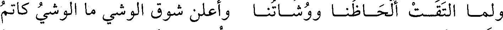
ولمـا التقـت ألحـاظنـا ووشـاتنـا وأعلن شوق الوشي ما الوشي كاتم
File: 000033.gt.txt (if the image is defective, simply delete all Arabic text and the line will be excluded)
تنفـس أنسـي مـن الخـدر نـاشـر فأسعد وحشي من السدر باغم
File: 000034.gt.txt (if the image is defective, simply delete all Arabic text and the line will be excluded)
وقلن :
File: 000035.gt.txt (if the image is defective, simply delete all Arabic text and the line will be excluded)
عشيـة لا آوي إلـى غيـر سـاجـع ببينـك حتـى كـل شـيء حمـائـم
File: 000036.gt.txt (if the image is defective, simply delete all Arabic text and the line will be excluded)
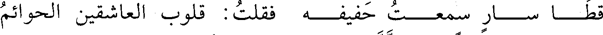
قطــا ســار سمعــت حفيفــه فقلت : قلوب العاشقين الحوائم
File: 000037.gt.txt (if the image is defective, simply delete all Arabic text and the line will be excluded)
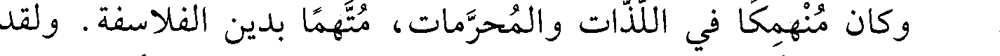
وكان منهمكا في اللذات والمحرمات، متهما بدين الفلاسفة. ولقد
File: 000038.gt.txt (if the image is defective, simply delete all Arabic text and the line will be excluded)
هموا بقتله، فأشار عليه مخدومه بالاختفاء، فهرب من الأندلس إلى
File: 000039.gt.txt (if the image is defective, simply delete all Arabic text and the line will be excluded)
المغرب، واجتمع بالقائد جوهر فامتدحه، ثم اتصل بالمعز أبي تميم الذي
File: 000040.gt.txt (if the image is defective, simply delete all Arabic text and the line will be excluded)
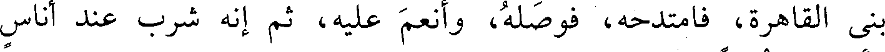
بنى القاهرة، فامتدحه، فوصله، وأنعم عليه، ثم إنه شرب عند أناس
File: 000041.gt.txt (if the image is defective, simply delete all Arabic text and the line will be excluded)
وأصبح مخنوقا.
File: 000042.gt.txt (if the image is defective, simply delete all Arabic text and the line will be excluded)
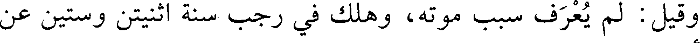
وقيل : لم يعرف سبب موته، وهلك في رجب سنة اثنتين وستين عن
File: 000043.gt.txt (if the image is defective, simply delete all Arabic text and the line will be excluded)
نيف وأربعين سنة.
File: 000044.gt.txt (if the image is defective, simply delete all Arabic text and the line will be excluded)
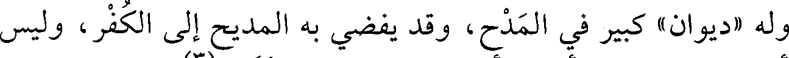
وله «ديوان» كبير في المدح، وقد يفضي به المديح إلى الكفر، وليس
File: 000045.gt.txt (if the image is defective, simply delete all Arabic text and the line will be excluded)
يلحقه أحد في الشعر من أهل الأندلس، وهو نظير المتنبي(3) .
File: 000046.gt.txt (if the image is defective, simply delete all Arabic text and the line will be excluded)
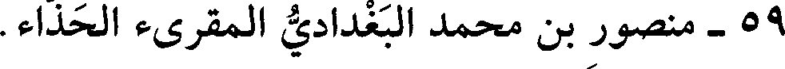
59 - منصور بن محمد البغدادي المقرىء الحذاء.
File: 000047.gt.txt (if the image is defective, simply delete all Arabic text and the line will be excluded)
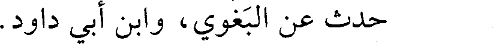
حدث عن البغوي، وابن أبي داود.
File: 000048.gt.txt (if the image is defective, simply delete all Arabic text and the line will be excluded)
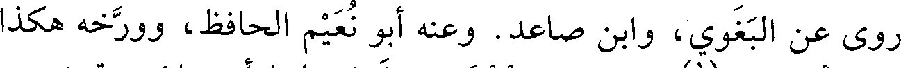
روى عن البغوي، وابن صاعد. وعنه أبو نعيم الحافظ، وورخه هكذا
File: 000049.gt.txt (if the image is defective, simply delete all Arabic text and the line will be excluded)
في «تاريخ أصبهان»(1) . وقال في معجمه: قدم علينا أصبهان سنة خمس
File: 000050.gt.txt (if the image is defective, simply delete all Arabic text and the line will be excluded)
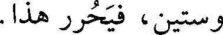
وستين، فيحرر هذا.
File: 000051.gt.txt (if the image is defective, simply delete all Arabic text and the line will be excluded)
31 - أحمد بن محمد بن عمارة بن أحمد، أبو الحارث الليثي
File: 000052.gt.txt (if the image is defective, simply delete all Arabic text and the line will be excluded)
الكناني، مولاهم، الدمشقي.
File: 000053.gt.txt (if the image is defective, simply delete all Arabic text and the line will be excluded)
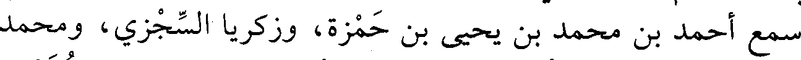
سمع أحمد بن محمد بن يحيى بن حمزة، وزكريا السجزي، ومحمد
File: 000054.gt.txt (if the image is defective, simply delete all Arabic text and the line will be excluded)
بن يزيد بن عبد الصمد، وأحمد بن إبراهيم البسري، وإبراهيم بن دحيم،
File: 000055.gt.txt (if the image is defective, simply delete all Arabic text and the line will be excluded)
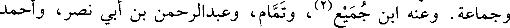
وجماعة. وعنه ابن جميع(2) ، وتمام، وعبدالرحمن بن أبي نصر، وأحمد
File: 000056.gt.txt (if the image is defective, simply delete all Arabic text and the line will be excluded)
بن محمد بن الحاج الإشبيلي، عبدالوهاب الميداني.
File: 000057.gt.txt (if the image is defective, simply delete all Arabic text and the line will be excluded)
وتوفي في ربيع الآخر في عشر التسعين(3) .
File: 000058.gt.txt (if the image is defective, simply delete all Arabic text and the line will be excluded)
32 - إبراهيم بنعبيد الله المعافري الإشبيلي.
File: 000059.gt.txt (if the image is defective, simply delete all Arabic text and the line will be excluded)
سمع من: أحمد بن خالد، ومحمد بن فطيس. وكان محدثا لغويا
To Save: `Ctrl+s`, make sure to choose `Webpage, complete`!